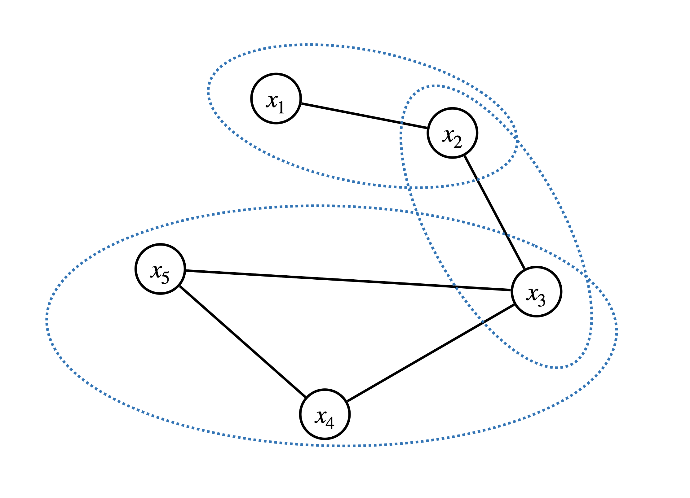
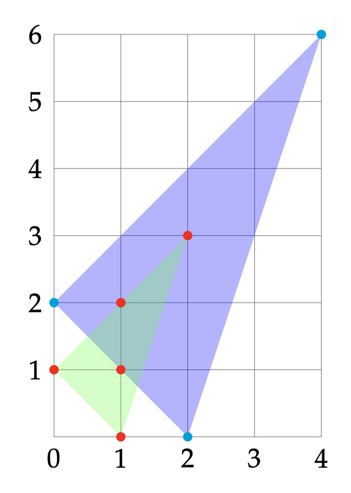

Chapter 6 Exploit Structure
6.1 Chordal Graphs and Sparse SDPs
The following discussion mostly follows (Zheng et al. 2020) and (Vandenberghe, Andersen, et al. 2015).
Consider an undirected graph \(\mathcal{G}= (\mathcal{V},\mathcal{E})\), where \(\mathcal{V}=\{1,\dots,n \}\) is the node set, and \(\mathcal{E}\subseteq \mathcal{V}\times \mathcal{V}\) is the edge set. A graph \(\mathcal{G}\) is called complete, or fully-connected, if any pair of nodes are connected by an edge.
A subset \(\mathcal{C}\subseteq \mathcal{V}\) is called a clique if the subgraph induced by \(\mathcal{C}\) is complete, i.e., for any \(i \neq j \in \mathcal{C}\), \((i,j) \in \mathcal{E}\) is connected. The number of nodes in \(\mathcal{C}\) is denoted \(|\mathcal{C}|\). A clique \(\mathcal{C}\) is called a maximal clique if \(\mathcal{C}\) is not part of a larger clique.
A cycle of length \(K\) in a graph \(\mathcal{G}\) is a set of distinct notes \(\{ v_1,v_2,\dots,v_K \}\) such that \((v_K,v_1) \in \mathcal{E}\) and \((v_i,v_{i+1}) \in \mathcal{E}\) for any \(i=1,\dots,K-1\). A chord in a cycle is an edge joining two non-adjacent nodes.
Definition 6.1 (Chordal Graph) An undirected graph is called chordal if every cycle of length greater than or equal to \(4\) has at least one chord.
Given a graph, testing chordality can be done efficiently. If a graph is chordal, then all its maximal cliques can be enumerated in linear time in the number of nodes and edges (Gavril 1972).
If a graph is not chordal, then it can be made chordal by adding edges, known as chordal extension. Finding the minimal chordal extension of a graph, i.e., making the graph chordal by adding the minimum number of edges, is NP-complete (Arnborg, Corneil, and Proskurowski 1987). However, there exist good heuristics that can find a reasonably good chordal extension quickly (Vandenberghe, Andersen, et al. 2015).
Given a symmetric matrix \(X \in \mathbb{S}^{n}\), the sparsity pattern of \(X\) can be naturally represented as an undirected graph. To do so, we can have the node set \(\mathcal{V}= [n]\) and connect the node \(i\) and the node \(j\) if and only if \(X_{ij} \neq 0\). Let \(\mathcal{G}= (\mathcal{V}, \mathcal{E})\) be the graph created by such a procedure.
Let \(\mathcal{C}\subset \mathcal{V}\) be a clique of the graph, we can create a matrix \(E_{\mathcal{C}} \in \mathbb{R}^{|\mathcal{C}| \times n}\) as follows \[ (E_{\mathcal{C}})_{ij} = \begin{cases} 1 & \text{if }\mathcal{C}(i) = j \\ 0 & \text{otherwise} \end{cases}, \] where \(\mathcal{C}(i)\) denotes the \(i\)-th vertex in \(\mathcal{C}\). With this matrix \(E_{\mathcal{C}}\), we can perform two operations
Given \(X \in \mathbb{S}^{n}\), \(E_{\mathcal{C}} X E_{\mathcal{C}}^\top\in \mathbb{S}^{|\mathcal{C}|}\) extracts the principal submatrix of \(X\) with rows and columns indexed by the vertices in \(\mathcal{C}\).
Given \(Y \in \mathbb{S}^{|\mathcal{C}|}\), \(E_{\mathcal{C}}^\top Y E_{\mathcal{C}} \in \mathbb{S}^{n}\) creates a larger matrix whose principal submatrix indexed by \(\mathcal{C}\) are populated by the values of \(Y\), and zero everywhere else.
Given \(\mathcal{G}= (\mathcal{V},\mathcal{E})\), let \(\mathcal{E}^* = \mathcal{E}\cup \{ (i,i), i \in \mathcal{V} \}\) be the set of edges including self-loops. Consider the subspace of \(\mathbb{S}^{n}\) defined as \[ \mathbb{S}^{n}(\mathcal{E},0) = \{ X \in \mathbb{S}^{n} \mid X_{ij}=X_{ji} = 0 \text{ if } (i,j) \neq \mathcal{E}^* \}. \] In words, the subspace \(\mathbb{S}^{n}(\mathcal{E},0)\) contains all symmetric matrices with non-zero entries corresponding to only the edges in \(\mathcal{E}^*\). This subspace is also called symmetric matrices with sparsity pattern \(\mathcal{G}\).
We can then consider the PSD matrices with sparsity pattern \(\mathcal{G}\) defined as \[\begin{equation} \mathbb{S}^{n}_{+}(\mathcal{E},0) = \{ X \in \mathbb{S}^{n}(\mathcal{E},0) \mid X \succeq 0 \} \tag{6.1} \end{equation}\] which contains \(n \times n\) PSD matrices with non-zero entries only in \(\mathcal{E}^*\). It is easy to check that \(\mathbb{S}^{n}_{+}(\mathcal{E},0)\) is a proper cone.
Correspondingly, we can consider another cone \[\begin{equation} \mathbb{S}^{n}_{+}(\mathcal{E},?) = \Pi_{\mathbb{S}^{n}(\mathcal{E},0)}(\mathbb{S}^{n}_{+}), \tag{6.2} \end{equation}\] where the projection is done according to the usual Frobenius norm. Clearly, given a PSD matrix \(X_+\), its projection onto \(\mathbb{S}^{n}(\mathcal{E},0)\) is just setting the entries of \(X_+\) not in \(\mathcal{E}^*\) to zero. In other words, every element \(X \in \mathbb{S}^{n}_{+}(\mathcal{E},?)\), while itself may not be PSD, must admit a positive semidefinite completion.
Lemma 6.1 (Sparse PSD Cones) \(\mathbb{S}^{n}_{+}(\mathcal{E},0)\) and \(\mathbb{S}^{n}_{+}(\mathcal{E},?)\) are dual to each other, i.e., \[ \mathbb{S}^{n}_{+}(\mathcal{E},?) = \{ X \in \mathbb{S}^{n}(\mathcal{E},0) \mid \langle X, Z \rangle \geq 0, \forall Z \in \mathbb{S}^{n}_{+}(\mathcal{E},0) \}. \] \[ \mathbb{S}^{n}_{+}(\mathcal{E},0) = \{ X \in \mathbb{S}^{n}(\mathcal{E},0) \mid \langle X, Z \rangle \succeq 0, \forall Z \in \mathbb{S}^{n}_{+}(\mathcal{E},?) \}. \]
When the graph \(\mathcal{G}= (\mathcal{V},\mathcal{E})\) is chordal, the cones \(\mathbb{S}^{n}_{+}(\mathcal{E},0)\) and \(\mathbb{S}^{n}_{+}(\mathcal{E},?)\) can be efficiently decomposed into smaller PSD cones.
Theorem 6.1 (Decomposition of Sparse PSD Cones) Suppose the graph \(\mathcal{G}= (\mathcal{V},\mathcal{E})\) is chordal and let \(\{ \mathcal{C}_1,\dots,\mathcal{C}_p \}\) be the set of maximal cliques of \(\mathcal{G}\). Then we have,
\(X \in \mathbb{S}^{n}_{+}(\mathcal{E},?)\) if and only if \[\begin{equation} E_{\mathcal{C}_k} X E_{\mathcal{C}_k}^\top\in \mathbb{S}^{|\mathcal{C}_k|}_{+}, \quad k=1,\dots,p, \tag{6.3} \end{equation}\] i.e., the principal submatrices of \(X\) corresponding to the maximal cliques are PSD.
\(Z \in \mathbb{S}^{n}_{+}(\mathcal{E},0)\) if and only if \[\begin{equation} Z = \sum_{k=1}^p E_{\mathcal{C}_k}^\top Z_k E_{\mathcal{C}_k}, \tag{6.4} \end{equation}\] for some PSD matrices \[ Z_k \in \mathbb{S}^{|\mathcal{C}_k|}_{+}, \quad k=1,\dots,p, \] i.e., \(Z\) admits a decomposition into smaller PSD matrices.
You should verify that when (6.3) and (6.4) hold, \(\langle X, Z \rangle\geq 0\).
We now consider the standard SDP pair \[\begin{equation} \begin{split} \min_{X \in \mathbb{S}^{n}} & \quad \langle C, X \rangle \\ \mathrm{s.t.}& \quad \langle A_i, X \rangle = b_i, i=1,\dots,m \\ & \quad X \succeq 0 \end{split} \tag{6.5} \end{equation}\] and \[\begin{equation} \begin{split} \max_{y \in \mathbb{R}^{m}, Z \in \mathbb{S}^{n}} & \quad \langle b, y \rangle \\ \mathrm{s.t.}& \quad C - \sum_{i=1}^m y_i A_i = Z \\ & \quad Z \succeq 0 \end{split}. \tag{6.6} \end{equation}\] We say the SDP pair satisfies the aggregate sparsity pattern described by the graph \(\mathcal{G}=(\mathcal{V},\mathcal{E})\) if \[\begin{equation} C \in \mathbb{S}^{n}(\mathcal{E},0), \quad A_i \in \mathbb{S}^{n}(\mathcal{E},0), i=1,\dots,m. \tag{6.7} \end{equation}\] We assume the sparsity pattern \(\mathcal{G}\) is chordal, or can be made chordal by some chordal extension. Note that under the sparsity pattern (6.7), it is clear that \[ Z = C - \sum_{i=1}^m y_i A_i \in \mathbb{S}^{n}(\mathcal{E},0) \] must also satisfy the sparsity pattern. Therefore, the dual SDP is equivalent to \[\begin{equation} \boxed{ \begin{split} \max_{y,Z} & \quad \langle b, y \rangle \\ \mathrm{s.t.}& \quad C - \sum_{i=1}^m y_i A_i = Z \\ & \quad Z \in \mathbb{S}^{n}_{+}(\mathcal{E},0) \end{split} } \tag{6.8} \end{equation}\] By standard conic duality (again!), since the dual cone of \(\mathbb{S}^{n}_{+}(\mathcal{E},0)\) is \(\mathbb{S}^{n}_{+}(\mathcal{E},?)\), we know the primal SDP must be equivalent to \[\begin{equation} \boxed{ \begin{split} \min_{X } & \quad \langle C, X \rangle \\ \mathrm{s.t.}& \quad \langle A_i, X \rangle = b_i, i=1,\dots,m \\ & \quad X \in \mathbb{S}^{n}_{+}(\mathcal{E},?) \end{split} } \tag{6.9} \end{equation}\] This makes sense because even if the matrix \(X\) is dense, since the cost matrix \(C\) and the constraint matrices \(A_i\) all satisfy the aggregate sparsity pattern, what matters in \(X\) are only those belong to \(\mathcal{E}^*\) as long as \(X\) admits a positive semidefinite completion.
The new conic pair (6.9) and (6.8) are not standard SDPs, we can convert them to standard SDPs, in two ways.
Convert the primal. From Theorem 6.1, we know \(X \in \mathbb{S}^{n}_{+}(\mathcal{E},?)\) if and only if (6.3) holds. Therefore, we can create redundant variables \(X_1,\dots,X_p\) such that \[ X \in \mathbb{S}^{n}_{+}(\mathcal{E},?) \quad \Leftrightarrow \begin{cases} E_{\mathcal{C}_k} X E_{\mathcal{C}_k}^\top= X_k \\ X_k \succeq 0 \end{cases}, k=1,\dots,p. \] Therefore, the primal is equivalent to \[\begin{equation} \begin{split} \min_{X,X_1,\dots,X_p} & \quad \langle C, X \rangle \\ \mathrm{s.t.}& \quad \langle A_i, X \rangle = b_i, i=1,\dots,m \\ & \quad E_{\mathcal{C}_k} X E_{\mathcal{C}_k}^\top= X_k, k=1,\dots,p \\ & \quad X_1,\dots,X_p \succeq 0 \end{split} \tag{6.10} \end{equation}\] This formulation, however, has free variables \(X\), which can be marginalized out, arriving the final form \[\begin{equation} \begin{split} \min_{X_1,\dots,X_p} & \quad \sum_{k=1}^p \langle C_k, X_k \rangle \\ \mathrm{s.t.}& \quad \sum_{k=1}^p \langle A_{i,k}, X_k \rangle = b_i, i=1,\dots,m \\ & \quad E_{\mathcal{C}_k \cap \mathcal{C}_j} \left( E_{\mathcal{C}_k}^\top X_k E_{\mathcal{C}_k} - E_{\mathcal{C}_j}^\top X_j E_{\mathcal{C}_j} \right)E_{\mathcal{C}_k \cap \mathcal{C}_j}^\top= 0, \forall j \neq k, \mathcal{C}_j \cap \mathcal{C}_k \neq \emptyset \\ & \quad X_1,\dots,X_p \succeq 0 \end{split} \tag{6.11} \end{equation}\] This conversion was first proposed by (Fukuda et al. 2001).
Convert the dual. From Theorem 6.1, we know \(Z \in \mathbb{S}^{\mathcal{E},0}_{+}\) if and only if (6.4) holds. Therefore, the dual SDP can be equivalently written as \[\begin{equation} \begin{split} \max_{y,Z_1,\dots,Z_p} & \quad \langle b, y \rangle \\ \mathrm{s.t.}& \quad C - \sum_{i=1}^m y_i A_i = \sum_{k=1}^p E_{\mathcal{C}_k}^\top Z_k E_{\mathcal{C}_k} \\ & \quad Z_1,\dots,Z_p \succeq 0 \end{split} \tag{6.12} \end{equation}\] which can be written as a standard SDP using a trick called dualization (R. Y. Zhang and Lavaei 2021).
6.2 Sparse Polynomial Optimization
Consider the basic closed semialgebraic set \[\begin{equation} S = \{ x \in \mathbb{R}^{n} \mid g_i(x) \geq 0, i=1,\dots,l \}. \tag{6.13} \end{equation}\] If the set \(S\) is Archimedean, then Putinar’s Positivstellensatz states that any polynomial \(p(x)\) strictly positive on \(S\) must admit an SOS representation \[\begin{equation} p(x) = \sigma_0(x) + \sum_{i=1}^l \sigma_i(x) g_i(x), \quad \sigma_i(x) \in \Sigma[x], i=0,\dots,l \tag{6.14} \end{equation}\] where the \(\sigma_i\)’s are SOS polynomials in \(x\). Using this result, the moment-SOS hierarchy for polynomial optimization has been derived.
It should be noted that, when the dimension \(n\) of \(x\) is large, the size of the gram matrix of \(\sigma_0(x)\) grows very fast with the relaxation order, and hence quickly becomes too large to be solved by existing SDP solvers like MOSEK.
In this section, we will show that when the polynomials \(p\) and \(\{ g_i \}_{i=1}^l\) are sparse in some sense, then the moment-SOS hierarchy can be made much more tractable. The discussion below easily generalizes to the case where \(S\) also has equality constraints.
6.2.1 Sparse SOS Representation
Let us first consider the case with three sets of variables. Let \(\mathbb{R}[x,y,z]\) be the ring of real polynomials in three sets of variables \(x \in \mathbb{R}^{n_x}\), \(y \in \mathbb{R}^{n_y}\), and \(z \in \mathbb{R}^{n_z}\). Let \(S_{xy} \subset \mathbb{R}^{n_x + n_y}\), \(S_{yz} \subset \mathbb{R}^{n_y + n_z}\), and \(S \subset \mathbb{R}^{n_x + n_y + n_z}\) be the compact basic closed semialgebraic sets defined as follows \[\begin{equation} \begin{split} S_{xy} &= \{ (x,y) \in \mathbb{R}^{n_x + n_y} \mid g_i(x,y) \geq 0, i \in I_{xy} \} \\ S_{yz} &= \{ (y,z) \in \mathbb{R}^{n_y + n_z} \mid h_i(y,z) \geq 0, i \in I_{yz} \} \\ S &= \{ (x,y,z) \in \mathbb{R}^{n_x + n_y + n_z} \mid (x,y) \in S_{xy}, (y,z) \in S_{yz} \} \end{split} \tag{6.15} \end{equation}\] for some polynomials \(g_i \in \mathbb{R}[x,y]\) and \(h_i \in \mathbb{R}[y,z]\) and some index sets \(I_{xy}\) and \(I_{yz}\). Denote by \(\Sigma[x,y]\) and \(\Sigma[y,z]\) to be the sets of SOS polynomials in \((x,y)\) and \((y,z)\), respectively.
Let us now consider the following two quadratic modules \[\begin{equation} \begin{split} \mathrm{Qmodule}[g] &= \left\{ \sigma_0 + \sum_{i \in I_{xy}} \sigma_i g_i \mid \sigma_i \in \Sigma[x,y], i\in \{ 0 \} \cup I_{xy} \right\} \\ \mathrm{Qmodule}[h] &= \left\{ \sigma_0 + \sum_{i \in I_{yz}} \sigma_i h_i \mid \sigma_i \in \Sigma[y,z], i\in \{ 0 \} \cup I_{yz} \right\} \end{split}. \tag{6.16} \end{equation}\]
We have the following result that gives a sparse Putinar’s P-satz.
Theorem 6.2 (Sparse Putinar's Positivstellensatz) Let \(S\), \(S_{xy}\), and \(S_{yz}\) be as defined in (6.15). Assume that both \(S_{xy}\) and \(S_{yz}\) are Archimedean (e.g., with a ball constraint \(M - \Vert (x,y) \Vert^2\) and \(M - \Vert (y,z) \Vert^2\)).
Given any \(p \in \mathbb{R}[x,y] + \mathbb{R}[y,z]\), i.e., a polynomial \(p(x,y,z)\) that can be decomposed as \[ p(x,y,z) = p_1(x,y) + p_2(y,z). \] If \(p(x,y,z)\) is strictly positive on \(S\), then \[ p \in \mathrm{Qmodule}[g] + \mathrm{Qmodule}[h]. \]
Let us contrast the sparse Putinar’s P-satz in Theorem 6.2 with the dense version in (6.14).
Invoking the dense version, we know that any \(p(x,y,z)\) positive on \(S\) has the decomposition \[\begin{equation} p = \sigma_0(x,y,z) + \sum_{i \in I_{x,y}} \sigma_i(x,y,z) g_i(x,y) + \sum_{i \in I_{yz}} \sigma_i(x,y,z) h_i(y,z), \quad \sigma_i \in \Sigma[x,y,z]. \tag{6.17} \end{equation}\] For a fixed relaxation order, the gram matrix of the SOS polynomial \(\sigma_0(x,y,z)\) has size \[ s(n_x + n_y + n_z + \kappa, \kappa). \]
Invoking the sparse version in Theorem 6.2, we obtain the following decomposition \[\begin{equation} \begin{split} p = \sigma_0(x,y) + & \sum_{i \in I_{xy}} \sigma_i(x,y) g_i(x,y) + \\ & q_0(y,z) + \sum_{i \in I_{yz}} q_i(y,z) h_i(y,z), \quad \sigma_i \in \Sigma[x,y], q_i \in \Sigma[y,z]. \end{split} \tag{6.18} \end{equation}\] For the same relaxation order, the gram matrix of the SOS polynomial \(\sigma_0(x,y)\) has size \[ s(n_x + n_y + \kappa,\kappa), \] and the gram matrix of the SOS polynomial \(q_0(y,z)\) has size \[ s(n_y + n_z + \kappa, \kappa). \]
At the same relaxation order, the SOS program (conic optimization) (6.18) is much smaller than that in (6.17)!
Example 6.1 (Sparse SOS Representation) Consider \[ S = \{ (x,y,z) \mid g(x,y)= 1- x^2 - y^2 \geq 0, h(y,z) = 1 - y^2 - z^2 \geq 0 \}, \] and \[ p(x,y,z) = \underbrace{1 + x^2 y^2 - x^2 y^4}_{\in \mathbb{R}[x,y]} + \underbrace{y^2 + z^2 - y^2 z^4}_{ \in \mathbb{R}[y,z]}. \]
We can find a sparse SOS representation of \(p(x,y,z)\) as \[ p = \underbrace{1 + x^4 y^2 + x^2 y^2 (1 - x^2 - y^2)}_{\in \mathrm{Qmodule}[g]} + \underbrace{y^4 z^2 + y^2 z^2(1-y^2 - z^2)}_{\in \mathrm{Qmodule}[h]}. \]
Let us generalize the result above to more than three sets of variables.
Consider a constraint subset \(S \subset \mathbb{R}^{n}\) as defined by (6.13). Denote \(I_0 = [n] = \{ 1,\dots,n \}\). Assume \(I_0\) can be written as the union of \(K\) subsets \[ I_0 = \cup_{k=1}^K I_k, \quad I_k \subset I_0. \] Let the size of \(I_k\) be \(n_k < n\). Denote \[ x(I_k) = \{ x_i \mid i \in I_k \} \] as the subset of variables with indexes in \(I_k\). The dimension of \(x(I_k)\) is \(n_k\). Denote by \(\mathbb{R}[x(I_k)]\) be the ring of real polynomials in the \(n_k\) variables \(x(I_k)\).
With this setup, we will make the following definition about the sparsity of the set \(S\) as defined in (6.13).
Definition 6.2 (Correlative Sparsity) Consider the constraint set \(S\) defined in (6.13), and a polynomial \(p \in \mathbb{R}[x]\). \(S\) and \(p\) are said to satisfy correlative sparsity, or chordal sparsity, if the following conditions hold:
For any constraint \(g_i(x),i=1,\dots,l\), there exists \(k \in [K]\) such that \(g_i(x)\) only involves variables \(x(I_k)\), i.e., \(g_i(x)\) can be written as \(g_i(x(I_k))\) for some \(I_k\)
The polynomial \(p(x)\) can be decomposed as \[ p = \sum_{k=1}^K p_k, \quad p_k \in \mathbb{R}[x(I_k)],k=1,\dots,K. \]
The partition \(I_1,\dots,I_K\) satisfies the running intersection property (RIP), i.e., for every \(k=1,\dots,K-1\) \[ (\cup_{j=1}^k I_k ) \cap I_{k+1} \subseteq I_s, \quad \text{for some } s \leq k. \]
When correlative sparsity holds, we can partition the set of all constraints \(\{ 1,\dots,l \}\) into \(K\) subsets \(J_k\) such that \[\begin{equation} \cup_{k=1}^K J_k = \{ 1,\dots,l \}, \quad g_i(x) \equiv g_i(x(I_k)), \forall i \in J_k, k=1,\dots,K \tag{6.19} \end{equation}\] and every constraint \(g_i, i \in J_k\) only involves variables \(x(I_k)\).
We are now ready to state the sparse Putinar’s Positivstellensatz.
Theorem 6.3 (Sparse Putinar's Positivstellensatz) Let \(S\) and \(p\) satisfy correlative sparsity in Definition 6.2, and \(J_1,\dots,J_K\) be as in (6.19).
Assume that \[ S_{x(I_k)} := \{ y \in \mathbb{R}^{n_k} \mid g_i(y) \geq 0, i \in J_k \} \] is Archimedean for every \(k=1,\dots,K\).
Then, if \(p(x)\) is strictly positive on \(S\), it admits a representation \[ p(x) = \sum_{k=1}^K \left( \sigma_k + \sum_{i \in J_k} \sigma_{ki} g_i \right), \quad \sigma_k, \sigma_{ki} \in \Sigma[x(I_k)], k=1,\dots,K. \]
A few remarks about the sparse Putinar’s Positivstellensatz:
The sparse P-satz is more efficient than the dense P-satz, in the sense that every SOS multiplier \(\sigma_k, \sigma_{ki}\) only involves the subset of variables \(x(I_k)\) of dimension \(n_k < n\).
The running intersection property (RIP) in Definition 6.2 is important. Without RIP, the sparse Putinar’s P-satz in general fails to hold, and one can give counterexamples, such as Example 12.1.4 in (Nie 2023). For the special case of three sets of variables discussed above, one can easily check that RIP holds: \[ (x,y) \cap (y,z) = y \subset (x,y). \]
The constraint index sets \(\{ J_1,\dots,J_K \}\) can have intersections. For example, for certain \(g_i(x)\), if there exist both \(k_1\) and \(k_2\) such that \(g_i(x) \in \mathbb{R}[x(I_{k_1})]\) and \(g_i(x) \in \mathbb{R}[x(I_{k_2})]\) both hold, then \(J_{k_1}\) and \(J_{k_2}\) can have intersections.
When the Archimedean condition does not hold, but correlative sparsity exists, one can derive a similar version of the sparse Schmudgen’s Positivstellensatz, where the quadratic modules are replaced with preorders.
Example 6.2 (Sparse Putinar's Positivstellensatz) Let \(x = (x_1,\dots,x_5)\), and \[\begin{equation} \begin{split} g_1(x) &= 1 - x_1^2 - x_2^2 \\ g_2(x) &= 1 - x_2^4 x_3^4 - x_3^2 \\ g_3(x) &= 1 - x_3^2 - x_4^2 - x_5^2 \end{split}. \end{equation}\] Consider the polynomial \(p(x)\) \[ p(x) = 1 + x_1^2 x_2^2 + x_2^2 x_3^2 + x_3^2 - x_3^2 x_4^2 - x_3^2 x_5^2. \] We can create the partition \[ I_1 = \{ 1,2 \}, \quad I_2 = \{ 2,3 \}, \quad I_3 = \{ 3,4,5 \}, \] and verify that they satisfy RIP: \[ I_1 \cap I_2 = \{ 2 \} \subset I_1, \quad (I_1 \cup I_2) \cap I_3 =\{ 3 \} \subset I_2. \] Every polynomial \(g_i\) only involves a subset of variables: \[ J_1 = {1}, \quad J_2 = {2}, \quad J_3 = {3}. \] The polynomial \(p(x)\) can be decomposed as \[ p(x) = \underbrace{(1 + x_1^2 x_2^2)}_{p_1} + \underbrace{(x_2^2 x_3^2)}_{p_2} + \underbrace{(x_3^2 - x_3^2 x_4^2 - x_3^2 x_5^2)}_{p_3}. \] Invoking Theorem 6.3, we can find a sparse SOS representation \[\begin{equation} \begin{split} p(x) = & 1 + x_1^4 x_2^2 + x_1^2 x_2^4 + x_1^2 x_2^2 g_1(x) \\ & + x_2^6 x_3^6 + x_2^2 x_3^4 + x_2^2 x_3^2 g_2(x) \\ & + x_3^4 + x_3^2 g_3(x). \end{split} \end{equation}\]
One may wonder how can we find such a partition \(I_1,\dots,I_K\)? It turns out this is exactly a graph problem! In particular, we can perform the following procedure.
Create a graph \(\mathcal{G}\) with \(\mathcal{V}= [1,\dots,n]\) nodes
For every \(g_i(x)\), find the minimum subset of variables that \(g_i(x)\) involves, say \(x(I_k)\). Connect all pairs of nodes in \(I_k\).
Write \(p(x) = \sum_{\alpha} p_{\alpha} x^{\alpha}\) with nonzero coefficients \(p_{\alpha}\). For every term \(x^{\alpha}\), find the variables with nonzero exponents, say \(\alpha_i \neq 0, \forall i \in I_{\alpha}\). Connect all pairs of nodes in \(I_{\alpha}\).
We obtain a graph from the procedure described above. In particular, for the problem in Example 6.2, we obtain a graph in Fig. 6.1. This graph is a chordal graph. If it is not chordal, we can find chordal extension.

Figure 6.1: Correlative sparsity and chordal graph.
Now in Fig. 6.1, one can see that \(I_1,I_2,I_3\) correspond to exactly the three maximal cliques of the chordal graph and they satisfy RIP. Indeed, this is true for any chordal graph.
Theorem 6.4 (RIP and Chordal Graph) A connected graph is chordal if and only if its maximal cliques, after an appropriate ordering, satisfy the running intersection property.
Therefore, after forming the connectivity graph and make it chordal, one can always find its maximal cliques and order them in a way that satisfies the RIP.
With the sparse Putinar’s P-satz introduced in Theorem 6.3, we can derive the sparse SOS relaxations for POPs. Consider the POP \[\begin{equation} \min_{x \in S} p(x) \tag{6.20} \end{equation}\] with \(S\) defined as in (6.13). If \(S\) and \(p\) satisfy correlative sparsity, then the \(\kappa\)-th order SOS relaxation reads \[\begin{equation} \begin{split} \max & \quad \gamma \\ \mathrm{s.t.}& \quad p(x) - \gamma \in \mathrm{Qmodule}[\{ g_i \}_{i \in I_1}]_{2\kappa} + \cdots + \mathrm{Qmodule}[\{ g_i \}_{i \in I_K}]_{2\kappa}, \end{split} \tag{6.21} \end{equation}\] which is an instance of SOS programming.
6.2.2 Sparse Moment Relaxation
What is the dual of the sparse SOS relaxation (6.21)?
Consider the POP (6.20) and assume that it satisfies the correlative sparsity condition in Definition 6.2. Define \[\begin{equation} S_k := \{ x(I_k) \in \mathbb{R}^{n_k} \mid g_i(x(I_k)) \geq 0, i \in J_k \}, \quad k=1,\dots,K. \tag{6.22} \end{equation}\]
Recall that, for any POP (6.20), let \(\mathcal{P}(S)\) be the space of all possible (nonnegative) measures supported on \(S\), there exists an equivalent linear programming formulation over measures \[\begin{equation} \begin{split} \min_{\mu \in \mathcal{P}(S)} & \quad \int_{S} p(x) d \mu(x) \\ \mathrm{s.t.}& \quad \int_S 1 d\mu(x) = 1. \end{split} \tag{6.23} \end{equation}\]
We will show that, when correlative sparsity exists, there exists a sparse infinite-dimensional linear programming formulation for the POP (6.20) that is equivalent to the dense formulation (6.23).
Towards this, we will denote \(\mathcal{P}(S_k)\) as the space of measures supported on \(S_k,k=1,\dots,K\). Then, we will define the projection \(\pi_k: \mathcal{P}(S) \rightarrow \mathcal{P}(S_k)\) from the space of measures supported on \(S\) onto the space of measures supported on \(S_k\). In particular, for any \(\mu \in \mathcal{P}(S)\), and any set \(B \subseteq S_k\), we have \[ \pi_k \mu(B) := \mu \left( \{ x \mid x \in S, x(I_k) \in B \} \right). \] Similarly, for any \(j\neq k \in [K]\) such that \(I_j \cap I_k \neq \emptyset\), we define \[ S_{jk} = S_{kj} = \{ x(I_j \cap I_k) \mid x(I_j) \in S_j, x(I_k) \in S_k \}, \] and the projection from the space of measures supported on \(S\) onto the space of measures supported on \(S_{jk}\) as \[ \pi_{jk}\mu(B) := \mu \left( \{ x \mid x \in S, x(I_j \cap I_k) \in B \} \right) \] for any \(B \subseteq S_{ij}\).
Now consider the following infinite-dimensional LP \[\begin{equation} \begin{split} \min_{\mu_k, k=1,\dots,K} & \quad \int_{S_k} p_k(x) d \mu_k (x) \\ \mathrm{s.t.}& \quad \pi_{kj} \mu_j = \pi_{jk} \mu_k, \quad \forall j \neq k, \mathcal{I}_j \cap \mathcal{I}_k \neq \emptyset \\ & \quad \int_{S_k} 1 d \mu_k(x) = 1, \quad k=1,\dots,K \\ & \quad \mu_k \in \mathcal{P}(S_k), \quad k=1,\dots,K \end{split} \tag{6.24} \end{equation}\]
Theorem 6.5 (Sparse Infinite-Dimensional LP) Consider the POP (6.20) that satisfies the correlative sparsity pattern in Definition 6.2. Assume every \(S_k\) defined in (6.22) is compact. Then the global minimum of the dense infinite-dimensional LP (6.23) is equal to the global minimum of the sparse infinite-dimensional LP (6.24), both of which are the same as the global minimum of the POP (6.20).
The equivalence of the dense LP and the sparse LP boils down to the following Lemma.
Lemma 6.2 (Measure from Marginals) Let \([n] = \cup_{k=1}^K I_k\) with \(n_k = |I_k|\), and \(S_k \subset \mathbb{R}^{n_k}\) be compact sets. Let \(S\) be defined as \[ S = \{ x \in \mathbb{R}^{n} \mid x(I_k) \in S_k, k=1,\dots,K \}. \]
Let \(\mu_k \in \mathcal{P}(S_k),k=1,\dots,K\) be a set of measures that satisfy the equality constraints of (6.24). If RIP holds for \(I_1,\dots,I_K\), then there exists a probability measure \(\mu \in \mathcal{M}(S)\) such that \[ \pi_k \mu = \mu_k, \quad k=1,\dots,K, \] i.e., \(\mu_k\) is the marginal of \(\mu\) on \(\mathbb{R}^{n_k}\) with respect to variables \(x(I_k)\).
With the sparse infinite-dimensional LP (6.24), we can easily write down its moment relaxation. Let \(y_k \in \mathbb{R}^{s(n_k,2\kappa)}\) be the truncated moment sequence associated with \(\mu_k, k=1,\dots,K\), the semidefinite relaxation for (6.24) reads \[\begin{equation} \begin{split} \min_{y_1,\dots,y_K} & \quad \sum_{k=1}^K \langle y_k, \mathrm{vec}(p_k) \rangle \\ & \quad M_\kappa[y_k] \succeq 0, \quad L_{g_j}^\kappa[y_k] \succeq 0, j\in J_k, k=1,\dots,K \\ & \quad y_{k,0} = 1,\quad k=1,\dots,K \\ & \quad \ell_{y_k} (x^\alpha) = \ell_{y_j} (x^\alpha), \quad \alpha \in \mathcal{F}_{n,2\kappa}, \mathrm{supp}(\alpha) \in I_j \cap I_k, \forall j \neq k \in [K], I_j \cap I_k \neq \emptyset \end{split} \tag{6.25} \end{equation}\] which is an SDP with \(K\) positive semidefinite constraints, each one corresponding to a moment matrix \(M_{\kappa}[y_k],k=1,\dots,K\). The last constraint in (6.25) ensures that when two measures \(\mu_j\) and \(\mu_k\) have overlapping coordinates, their moments in the shared coordinates are equal to other, which corresponds to the first equality constraints in the original sparse LP (6.24).
6.2.3 Term Sparsity
In the dense moment-SOS hierarchy and the correlative sparsity based moment-SOS hierarchy, the monomial basis has always been the vector of standard monomials, namely, \([x]_{\kappa}\) in the case of dense moment-SOS, and \([x(I_k)]_{\kappa},k=1,\dots,K\) in the case of sparse moment-SOS.
We then ask the question, could we use only a subset of the standard monomials? This is another type of sparsity called term sparsity.
We will give a brief discussion of term sparsity in the case of unconstrained polynomial optimization: \[\begin{equation} \min_{x \in \mathbb{R}^{n}} \quad p(x). \tag{6.26} \end{equation}\] The \(\kappa\)-order SOS relaxation (using Putinar’s Positivstellensatz) to (6.26) is \[\begin{equation} \begin{split} \max & \quad \gamma \\ \mathrm{s.t.}& \quad p(x) - \gamma = [x]_\kappa^\top Q [x]_\kappa \\ & \quad Q \succeq 0 \end{split}. \tag{6.27} \end{equation}\]
The following result, due to Reznick (Reznick 1978), allows us to use a possibly smaller set of monomials by considering the so-called Newton Polytopes. Given a polynomial \(p = \sum_{\alpha} p_\alpha x^{\alpha}\) with nonzero \(p_\alpha\)’s, the support of \(p\) is the set of exponents: \[ \mathrm{supp}(p) = \{ \alpha \mid p_\alpha \neq 0 \}. \] The Newton polytope of \(p\), denoted as \(\mathrm{New}(p)\), is the convex hull generated by points in its support.
Theorem 6.6 (Newton Polytope) If \(p, q_i \in \mathbb{R}[x]\), and \(p = \sum_i q_i^2\), then \[ \mathrm{New}(q_i) \subset \frac{1}{2} \mathrm{New}(p). \]
What this theorem implies is that if the support of \(p\) is sparse and \(p\) is SOS, then the supprt of its SOS factors \(q_i\) must also be sparse. In particular, it suffices to consider a monomial basis \[\begin{equation} \mathcal{B}= \frac{1}{2} \mathrm{New}(p) \cap \mathcal{F}_n \tag{6.28} \end{equation}\] when searching for SOS factorization of \(p\).
Example 6.3 (Newton Polytope) Consider the polynomial \[ p(x) = 4 x_1^4 x_2^6 + x_1^2 - x_1 x_2^2 + x_2^2. \] The support of \(p\) is \[ \mathrm{supp}(p) = \{ (4,6), (2,0), (1,2), (0,2) \}. \] We can therefore choose the monomial basis according to (6.28), which becomes \[ \mathcal{B}= \{ (1,0),(2,3),(0,1),(1,1),(1,2) \}. \] This is shown in Fig. 6.2. Note that since the degree of \(p\) is \(10\), using the dense monomial basis would lead to \[ s(2,5) = \begin{pmatrix} 2 + 5 \\ 2 \end{pmatrix}= 21 \] terms. However, the monomial basis \(\mathcal{B}\) found by Newton polytope has only \(5\) terms.

Figure 6.2: Newton polytope.
Let \(\mathcal{B}\) be the monomial basis found by using Newton polytope. The SOS relaxation that exploits term sparsity reads \[\begin{equation} \begin{split} \max & \quad \gamma \\ \mathrm{s.t.}& \quad p(x) - \gamma = [x]_{\mathcal{B}}^\top Q [x]_{\mathcal{B}} \\ & \quad Q \succeq 0 \end{split}. \tag{6.29} \end{equation}\] The dual moment relaxation of (6.29) becomes \[\begin{equation} \begin{split} \min_{y} & \quad \ell_y(p) \\ \mathrm{s.t.}& \quad M_{\mathcal{B}}[y] \succeq 0 \\ & \quad y_0 = 1 \end{split} \tag{6.30} \end{equation}\] where \(M_{\mathcal{B}}[y]\) is the principal submatrix of the full moment matrix \(M_\kappa[y]\) with rows and columns indexed by the exponents in the sparse basis \(\mathcal{B}\).
Starting with the basis \(\mathcal{B}\), one can make it even sparser by building the term sparsity graph and exploiting chordal sparsity of that graph. I won’t describe the details of that approach as it can get quite messy, please see (Magron and Wang 2023) for a comprehensive treatment.